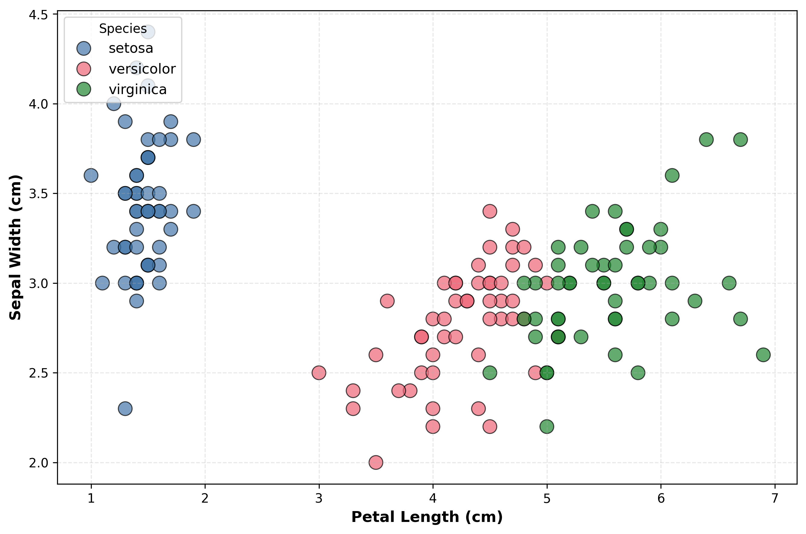
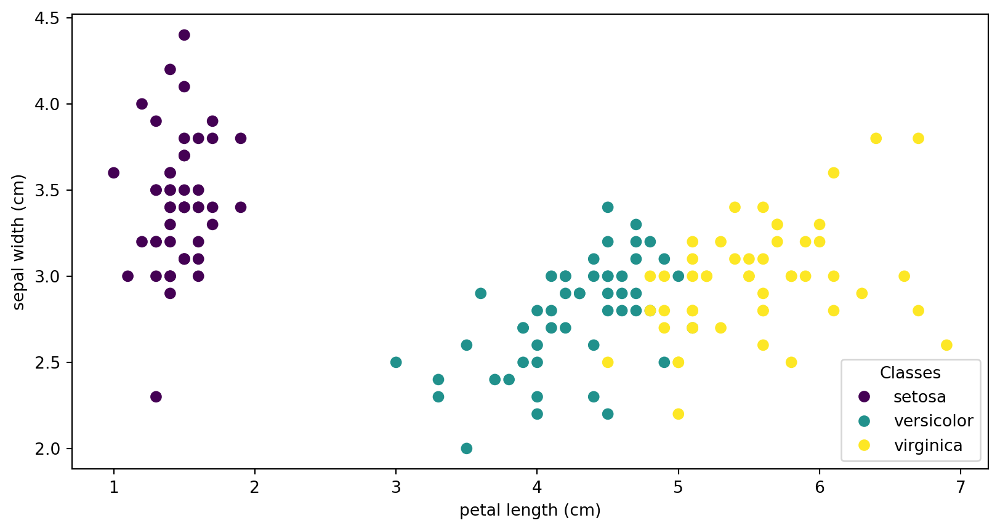
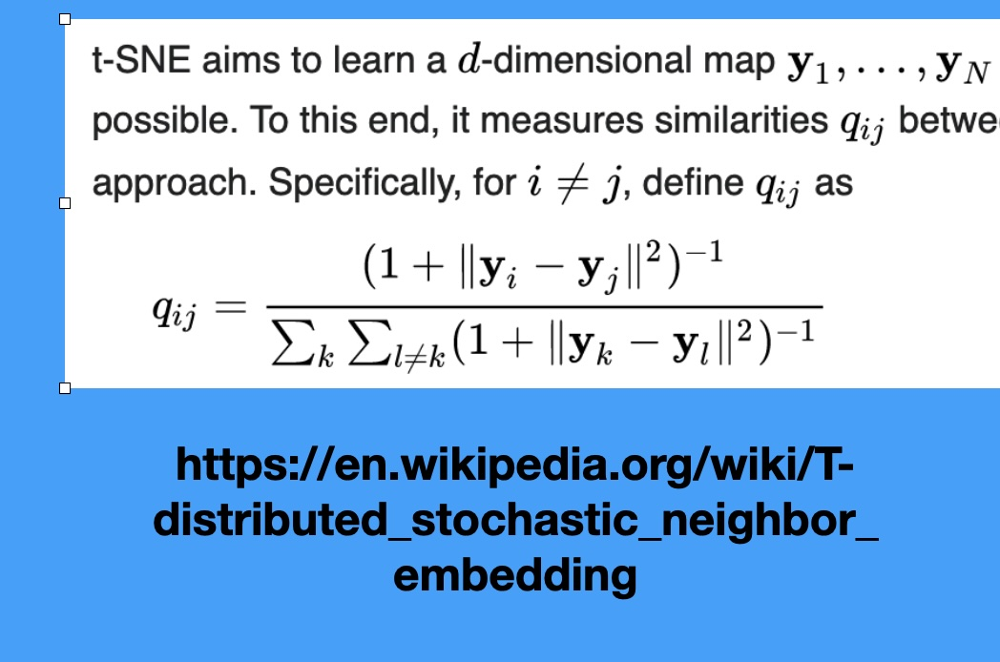

Clustering and Dimensionality Reduction
CS-GY 6313 - Fall 2025
What is Clustering?
“… the goal of clustering is to separate a set of examples into groups called clusters”

Clustering Methods Comparison

K-means Clustering

Clustering Method Zoo

Ground Truth vs K-means


The Manifold Hypothesis
- Key insight: High-dimensional data often lies on lower-dimensional structures

Non-linear Manifolds

- Images of ‘3’ transformed by rotation, scaling, translation
- What’s the intrinsic dimensionality? (~5-7 dimensions)
- The underlying manifold is non-linear
PCA: Geometric Intuition

How t-SNE Works


Critical Resource: “How to Use t-SNE Effectively”

https://distill.pub/2016/misread-tsne/
Key Warning: Parameters Matter!
- t-SNE has a critical parameter: perplexity
- Roughly the number of close neighbors each point has
- Typical values: 5-50
- Different perplexities = different structures!

Critical: Cluster Sizes Mean Nothing!

- t-SNE equalizes cluster densities
- Large visual clusters ≠ large actual clusters
- Size refers to spatial extent, not number of points
Critical: Distances Between Clusters Mean Nothing!

Warning: Random Noise Can Look Structured

- Left: PCA of random data (correctly shows no structure)
- Right: t-SNE of same data (shows apparent clusters!)
- Lesson: Don’t assume clusters in t-SNE are real!
UMAP: The Modern Alternative

https://pair-code.github.io/understanding-umap/
How UMAP Works

UMAP: min_dist = 0.0

UMAP: min_dist = 0.8

Parameter Comparison: t-SNE vs UMAP